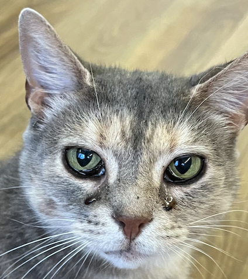

This is Jilly.

She's a four-year-old rescue cat and has been living with my neighbor for a year. And like all cats, she is weird.
The research on what causes cats to behave so derpy has probably started since Ancient Egypt.
But even to this day, we can never truly know what's going inside their head.
So we decided to give it a try, and see how much we could understand a cat in two days of cat-sitting, six hours a day.
We then wrote down our findings in pseudocode that replicated the cat's behavior.
Below is the journal of our weekend with Jilly, and our adventure to deepen our knowledge of cats.
Based on our extensive research on cats through Wikipedia, we decided to
use these research data for the basis for creating a cat.
The Feline Five
(https://doi.org/10.1371/journal.pone.0183455)
Cat's Body Postures
(https://www.researchgate.net/publication/292962681_An_Ethogram_for_Behavioural_Studies_of_the_Domestic_Cat_Felis_silvestris_catus_L)
Our cat's pseudocode would look like this:
Cat {
neuroticism: int (range 0-100)
// cats who are shy, suspicious, insecure and anxious
extraversion: int (range 0-100)
// includes traits such as curiosity, vigilance and active
dominance: int (range 0-100)
// cats who are aggressive and bullying to other cats
agreeableness: int (range 0-100)
// sums up how affectionate, gentle and friendly cats are to
people
impulsiveness: int (range 0-100)
// reflects those cats who are reckless and impulsive
age: int
hunger: int (range 0-100)
loneliness: int (range 0-100)
sleepiness: int (range 0-100)
posture: [
relaxed-low
// Body: lying on the side or sitting. Legs: bent, or hind legs laid
out or extended. Tail: is loosely wrapped, extended, or held
up.
relaxed-stretched
alert
// Body: lying on its belly, or sitting. Legs: bent or extended
(when standing). Tail: curved back or straight upwards, and there
may be twitching while the tail is positioned downwards.
confident
// Body: may walk around in a more comfortable manner. Tail: up to
the sky indicating their importance.
tense
// Body: lying on its belly, with the back of its body lower than
its upper body (slinking). Legs: bent, and its front legs are
extended when standing. Tail: close to the body, tensed or curled
downwards; there can be twitching when the cat is standing up.
fearful
// Body: lying or crouching directly on top of its paws. Its entire
body may be shaking and very near the ground when standing up. Legs:
bent near the surface. Tail: curled and very close to its body when
standing on all fours.
]
}
while (age < 2 years) Cat.set subject to change;
age: +1/year;
hunger: +5/hour, -30/meal, +1/playtime minute;
loneliness: -5/playtime minute, +10/solitary hour, -20/touch min;
sleepiness: +5/playtime minute, -10/sleep hour, +10/non-sleeping hour;
Now we assume we know nothing about Jilly except for her age. We create
a random cat and modify the data as we observe her behavior.

Create Cat Jilly (
neuroticism: random(1-100)
extraversion: random(1-100)
dominance: random(1-100)
agreeableness: random(1-100)
impulsiveness: random(1-100)
age: 4
hunger: 50
loneliness: 50
sleepiness: 50
posture: random from array
)
On our first day, we discovered some personality traits about Jilly.
She was very agreeable in terms that she was open to human touch and quite affectionate.
She wasn't suspicious of us, meaning she had a rather low neuroticism.
She was not quite active, but still active enough to play with toys.
We also noticed that when we petted her back, her posture changed.
However, when we did this for a prolonged time she became overwhelmed and twitched to move away from our hand.
We modified our code according to our time spent with Jilly.
She was very agreeable in terms that she was open to human touch and quite affectionate.
She wasn't suspicious of us, meaning she had a rather low neuroticism.
She was not quite active, but still active enough to play with toys.
We also noticed that when we petted her back, her posture changed.
However, when we did this for a prolonged time she became overwhelmed and twitched to move away from our hand.
We modified our code according to our time spent with Jilly.
// Jilly's status at day-1, 20:00 PM
Set Jilly.agreeableness to 80;
Set Jilly.neuroticism to 30;
Set Jilly.extraversion to 40;
Set Jilly.loneliness to 0;
Set Jilly.hunger to 0;
Set Jilly.sleepiness to 80;
Jilly.add(function reactToTouch() {
If (touched on head) posture = relaxed-low;
If (touched on rear) posture = relaxed-stretched;
If (time touched on rear > 15 seconds) posture = twitch};
)
By the time we got back the next day, Jilly was sleeping. When she woke
up she was very clingy.
We weren't sure if it was because of the loneliness or because she was hungry.
We tested out if we could mitigate both hunger and loneliness by spanking her while eating.
She normally wouldn't let us spank her, but she seemed fine with it when she was eating.
We modified the code according to our discovery.
We weren't sure if it was because of the loneliness or because she was hungry.
We tested out if we could mitigate both hunger and loneliness by spanking her while eating.
She normally wouldn't let us spank her, but she seemed fine with it when she was eating.
We modified the code according to our discovery.
// Jilly's status at day-2, 09:00 AM
Set Jilly.agreeableness to 90;
Set Jilly.loneliness to 100;
Set Jilly.hunger to 65;
Set Jilly.sleepiness to 0;
Jilly.add(function reactWhenVeryLonely() {
If (loneliness == 100 && human is near) headbutt human;
If (loneliness == 100 && human is near && human !respond)
nibble human;
})
Jilly.add(function reactToSpanking() {
If (eating == true) no response;
Else posture = tense;
})
We also learned that Jilly already knew how to do high-fives, or maybe
she just responds to human hands.
As a prize, we let her get snacks from the box until we eventually had to stop her because she kept on eating.
Besides that, we spent our last day playing with her for some time and feeding her meal.
Here is the updated code for Jilly.
As a prize, we let her get snacks from the box until we eventually had to stop her because she kept on eating.
Besides that, we spent our last day playing with her for some time and feeding her meal.
Here is the updated code for Jilly.
// Jilly's status at day-2, 08:00 PM
Set Jilly.loneliness to 0;
Set Jilly.hunger to 0;
Set Jilly.sleepiness to 80;
Jilly.add(function reactToHumanHand() {
If (human hand is near) touch human hand;
})
Jilly.add(function eatSnack() {
While (hunger > 0 && snack is near &&) eat snack;
})
The two-day journal of observing Jilly ends here.
There were some characteristics that we set initially and couldn't find out about her, but we also got to add more functions.
Jilly was very cooperative and we were glad that we were able to know more about cats through the observation.
Here is the final code for Jilly.
There were some characteristics that we set initially and couldn't find out about her, but we also got to add more functions.
Jilly was very cooperative and we were glad that we were able to know more about cats through the observation.
Here is the final code for Jilly.
Cat Jilly (
neuroticism: 30
extraversion: 40
dominance: ?
agreeableness: 90
impulsiveness: ?
age: 4
hunger: 0
loneliness: 0
sleepiness: 80
posture: relaxed
function reactToTouch()
function reactWhenVeryLonely()
function reactToSpanking()
function reactToHumanHand()
function eatSnack()
)